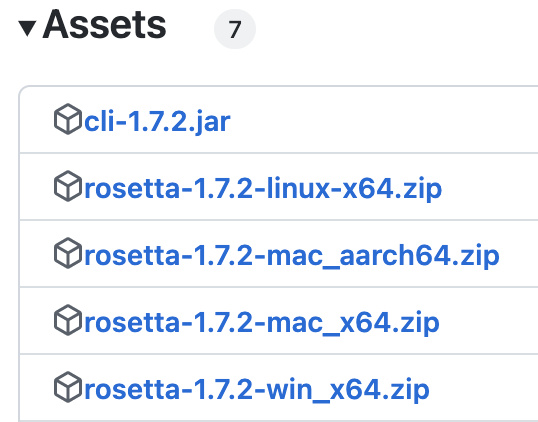
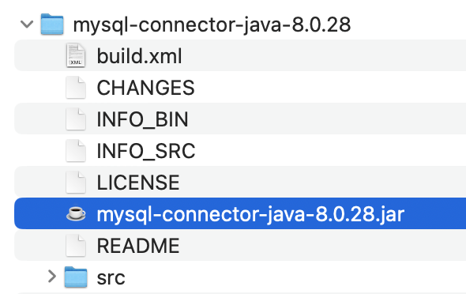
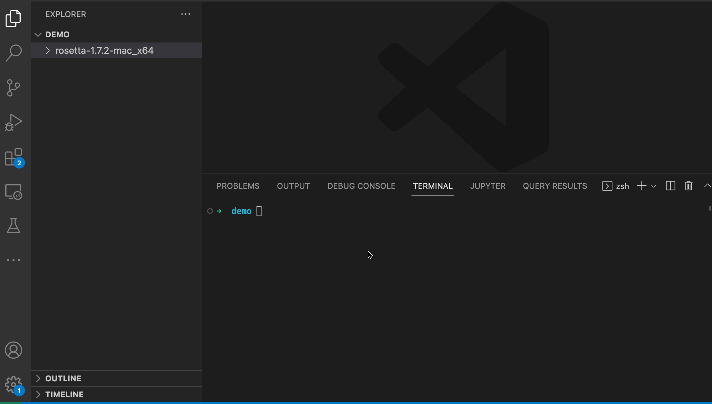
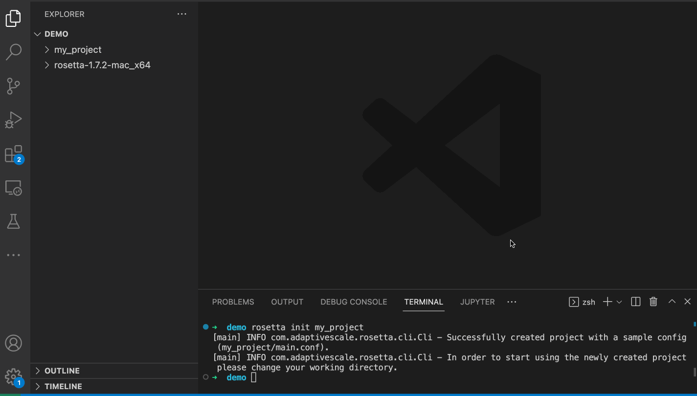
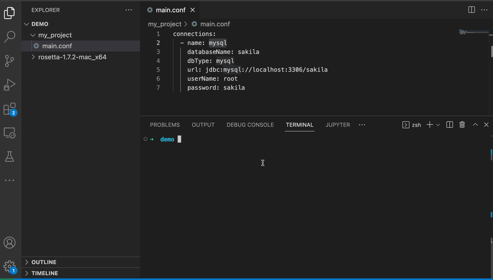

Welcome to the RosettaDB quickstart guide. This guide will walk you through step-by-step on how to get started with using rosetta.
RosettaDB is a declarative schema management toolset that allows you to define a database schema in a simple modeling language, DBML, written in YAML, which provides an abstraction for both managing database objects for a single database as well as porting, or transpiring, database objects from one database to another--you can model your schema once and deploy to any of the supported databases.
RosettaDB maintains the state of the database objects so that the DDL for the transformations of those objects over time are automatically generated from the declarative DBML model, and data quality tests can be incorporated directly into the model. By making database object declarative Rosetta can support idempotence of data pipelines and make database schema management programmable -- Database as Code!
RosettaDB is declarative database modeling technology that supports the following functions:
Defining database object in a declarative fashion using DBML, a YAML based object definition language that defines your database objects
Converting data models from one database system to another
To follow along with this guide you will need access to a MySQL database. For the sake of simplicity, you can set up the database in a docker container with the following command:
docker run -d --name mysql -p 3306:3306 restsql/mysql-sakila
The examples provided in this guide can be adopted for Linux, Windows and MacOS operating systems, and are left as an exercise for the user.
To install and use rosetta you will need both the rosetta binary and the corresponding JDBC for your database.
You can download the binary for your operating system from GitHub.
Example of operating system specific downloads:

Using your system's unzip software, extract the archive to a desired location on your computer.
unzip rosetta-1.7.2-mac_x64.zip
To connect to your database with rosetta it's recommended that you use a tested JDBC driver. You can find download links for the JDBC drivers on the GitHub page or download directly from the vendor.
There's a good chance the JDBC driver is provided as a Zip file, so you need to extract that to your computer as well. Locate the JAR file for your driver as you will be using this in a later step to configure your database connection.

Accessing the RosettaDB binary can be done either by using a relative path or a fully qualified path from any directory.
Update the PATH environment variable so that the rosetta binary can be invoked from any location. You can do this by updating and reloading your system profile file – e.g. on linux this can be your .bashrc file.
Additionally, RosettaDB will look for JDBC drivers on the path defined via the ROSETTA_DRIVERS variable.
Add the following lines to your profile file...
export PATH=$PATH:~/rosetta-1.7.2-mac_x64/bin export ROSETTA_DRIVERS=~/drivers/jdbc/*
RosettaDB organizes all of its working files into subfolders, and all your connections will be defined in a config file.
To have rosetta prime the config file for you, you can issue the init sub-command.
rosetta init my_project
Example...

Now that you have a project folder and your config file initialized, you can edit the main.conf file with your database configuration.
Here's an example configuration for a MySQL database running locally on this host:
connections:
- name: mysql
databaseName: sakila
dbType: mysql
url: jdbc:mysql://localhost:3306/sakila
userName: root
password: sakilaExample...

To extract a DBML, a database model file in YAML format, you simply run the extract command pointing to the desired source connection.
rosetta extract -s mysql
Example...

Once the extract command completes you will see a model.yaml file created inside of a new folder named mysql, the same name that was used for defining the connection to the MySQL database.
In this guide you learned how to install and configure rosetta and you extracted your very first model.
Try the following next steps for working with RosettaDB:
compile subcommand diffapply